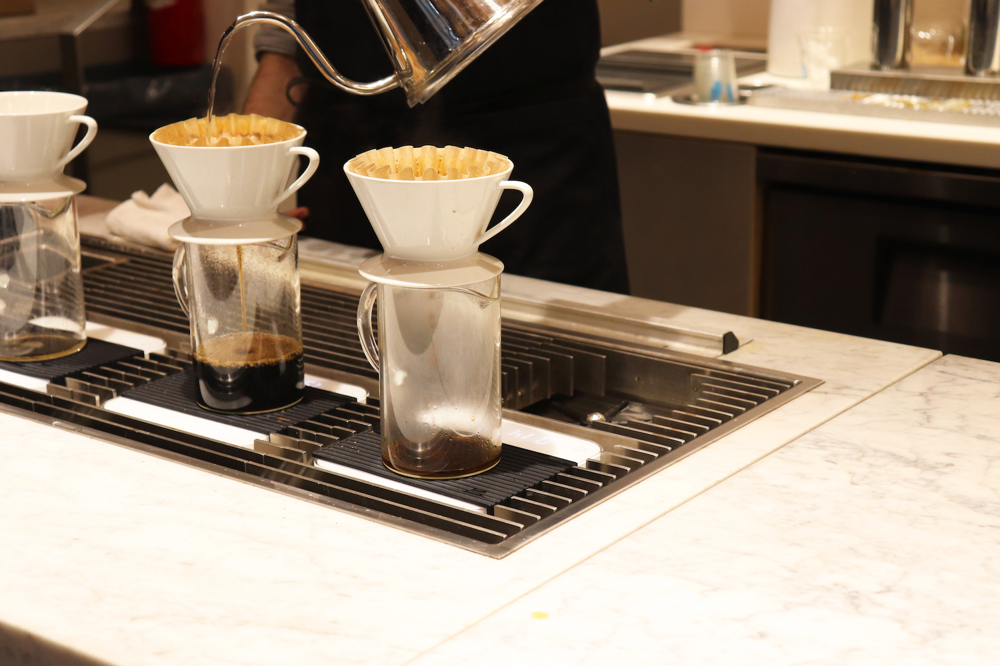
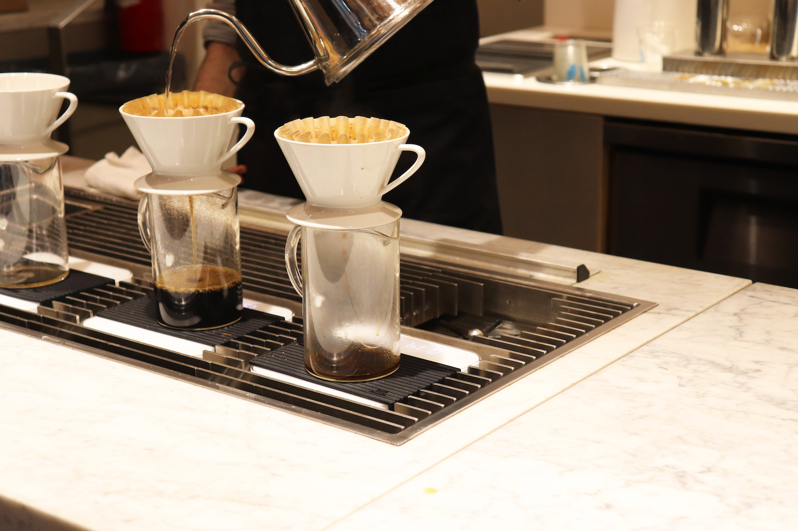

Profile
 

Amy
Ami Kubo
- Birth
- 22nd Fukuoka,Japan
- Final education
- Graduated from Seinan Gakuin University, Fukuoka, Japan. Department of Foreign Languages, majoring in English (March, 2021)
- career
- This spring, I graduated from a university in Fukuoka. I had been offered a job at a travel agency, but due to the effects of the coronavirus, I declined the offer. I decided to become a web designer, and I am still studying on my own.
- Skills
- HTML5/CSS3/JavaScript/jQery/PHP/Illustrator/Photoshop
- Hobbies & Specialties
- I am good at photography and retouching. My hobby is traveling abroad, and I can communicate in English. I can make a good cup of coffee. (I have been a barista for 5 years.)